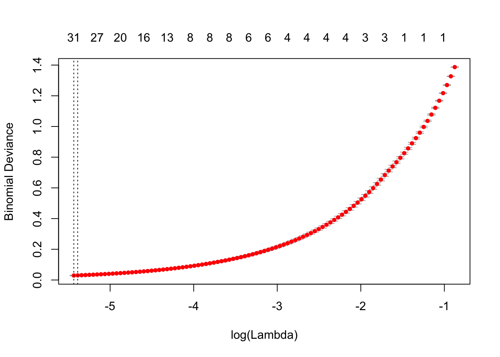
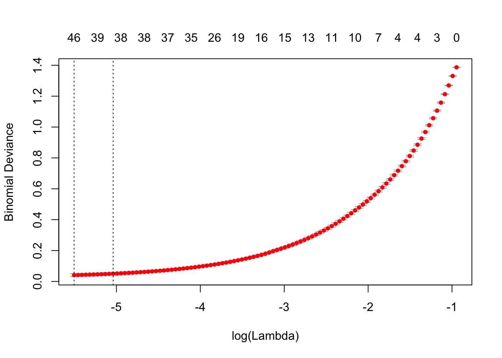

Last updated: 2018-06-26
workflowr checks: (Click a bullet for more information) ✔ R Markdown file: up-to-date
Great! Since the R Markdown file has been committed to the Git repository, you know the exact version of the code that produced these results.
✔ Environment: empty
Great job! The global environment was empty. Objects defined in the global environment can affect the analysis in your R Markdown file in unknown ways. For reproduciblity it’s best to always run the code in an empty environment.
✔ Seed:
set.seed(20180626)
The command set.seed(20180626) was run prior to running the code in the R Markdown file. Setting a seed ensures that any results that rely on randomness, e.g. subsampling or permutations, are reproducible.
✔ Session information: recorded
Great job! Recording the operating system, R version, and package versions is critical for reproducibility.
✔ Repository version: 7bec381
wflow_publish or wflow_git_commit). workflowr only checks the R Markdown file, but you know if there are other scripts or data files that it depends on. Below is the status of the Git repository when the results were generated:
Ignored files:
Ignored: .DS_Store
Ignored: docs/figure/
Untracked files:
Untracked: data/b_filtered/
Untracked: data/cd34_filtered/
Untracked: data/jurkat_filtered/
Untracked: data/monocytes_filtered/
Untracked: data/regulatory_t_filtered/
| File | Version | Author | Date | Message |
|---|---|---|---|---|
| Rmd | 7bec381 | KaiqianZhang | 2018-06-26 | Publish four files for myproject |
library(Matrix)
library(glmnet)Loading required package: foreachLoaded glmnet 2.0-16library(susieR)
library(matrixStats)
library(L0Learn)setwd("~/Desktop/M/Celltype-Variable-Selection/analysis")
b.data = readMM('../data/b_filtered/hg19/matrix.mtx.gz')
cd34.data = readMM('../data/cd34_filtered/hg19/matrix.mtx.gz')
jurkat.data = readMM('../data/jurkat_filtered/hg19/matrix.mtx.gz')
monocytes.data = readMM('../data/monocytes_filtered/hg19/matrix.mtx.gz')
regulatory.t.data = readMM('../data/regulatory_t_filtered/hg19/matrix.mtx.gz')set.seed(1)
# First X1: consider B cells and monocytes cells classification problem
b.cells = b.data[,sample(ncol(b.data),1000)]
monocytes.cells = monocytes.data[,sample(ncol(monocytes.data),1000)]
# Second X2: consider B cells and T cells classification problem
regulatory.t.cells = regulatory.t.data[,sample(ncol(regulatory.t.data),1000)]
# X1.raw is a n=2000 by p=32738 matrix
# X1 is a n=2000 by p=14125 matrix after removing columns with all zeros
X1.raw = t(cbind(b.cells,monocytes.cells))
keepX1 = which(colSums(X1.raw)!=0)
X1 = X1.raw[,keepX1]
# X2.raw is a n=2000 by p=32738 matrix
# X2 is also a n=2000 by p=14125 matrix after removing columns with all zeros
X2.raw = t(cbind(b.cells,regulatory.t.cells))
keepX2 = which(colSums(X2.raw)!=0)
X2 = X2.raw[,keepX1]
# y.binary is a 2000-vector
y.binary = c(rep(1,1000), rep(0, 1000))# split evenly into training and testing data
X1.train = rbind(X1[1:500,], X1[1001:1500,])
X1.test = rbind(X1[501:1000,], X1[1501:2000,])
X2.train = rbind(X2[1:500,], X2[1001:1500,])
X2.test = rbind(X2[501:1000,], X2[1501:2000,])
y.binary.train = c(rep(1,500), rep(0,500))
y.binary.test = c(rep(1,500), rep(0,500))Last time analyses on X2 show that glmnet needs 31 features, L0Learn with L0 regularization needs 101 features (sorry, I said 102 since I included intercept), and susie needs 5 features. We want to further investigate that why those methods select different numbers of features.
We first run four methods on X2: glmnet, L0Learn with L0 regularization(we call it L0), L0Learn with L0L2 regularization(we call it L0L2), and susie. Note that we also run L0L2 and it only needs 1 feature(i.e.V4093), which is picked by all four methods. We observe that 1 feature from L0L2 and 5 features from susie are also included by 101 L0 features. The 31 glmnet features, however, do not have many overlappings with 101 L0 features. (Q1???)
X2fit.glmnet = cv.glmnet(X2.train,y.binary.train, family='binomial')plot(X2fit.glmnet)
X2.glmnet.coefs = coef(X2fit.glmnet, s = "lambda.min")
X2.glmnet.features = which(X2.glmnet.coefs!=0)-1
X2.glmnet.coefVals = X2.glmnet.coefs[X2.glmnet.features+1]
X2.glmnet.coefVals = X2.glmnet.coefVals[-1]
X2.glmnet.features = X2.glmnet.features[-1]
length(X2.glmnet.features)[1] 31X2.glmnet.features [1] 30 304 918 1676 2548 3234 4093 4404 4415 4496 4822
[12] 5050 5837 6201 6743 7231 8078 8387 8388 8517 8633 9119
[23] 9357 9768 9823 10075 10130 11735 11919 12816 13210X2.glmnet.coefVals [1] 2.511702e-01 3.252539e-01 -5.197198e-02 9.521362e-01 1.020641e-03
[6] 2.103440e-01 4.155124e-01 1.399981e-01 -3.272109e-02 2.402189e-02
[11] 3.821554e-02 -6.521325e-03 2.534513e-01 1.329931e-03 1.445768e-01
[16] 1.247937e+00 1.030370e-02 -3.146265e-01 -3.361239e-01 -8.972335e-02
[21] -6.515224e-02 1.266269e-01 2.000500e-01 1.952574e-04 3.729377e-07
[26] -1.327733e-01 2.389241e-01 1.081304e-01 9.248483e-03 -2.543254e-02
[31] 6.461074e-02X2fit.L0Learn.L0 = L0Learn.cvfit(as.matrix(X2.train), y.binary.train, Penalty='L0')lambdaIndex = which.min(X2fit.L0Learn.L0$cvmeans) # find the optimal lambda, which has minimum cv error
X2coef.L0Learn.L0 = coef(X2fit.L0Learn.L0, lambda = X2fit.L0Learn.L0$lambda[lambdaIndex])
X2coefIndex.L0Learn.L0 = which(X2coef.L0Learn.L0!=0)-1
length(X2coefIndex.L0Learn.L0)-1[1] 101X2coefIndex.L0Learn.L0 = X2coefIndex.L0Learn.L0[-1]
X2coefIndex.L0Learn.L0 [1] 314 342 1120 1253 1446 1501 1675 2161 2479 2633 2720
[12] 3096 3179 3253 3561 3605 3863 3953 4093 4136 4375 4462
[23] 5090 5261 5413 5489 5597 5654 5959 5987 6075 6225 6226
[34] 6273 6312 6369 6550 6581 6728 6781 6795 6957 7003 7174
[45] 7245 7545 7572 7582 7729 7742 7815 7882 7986 8078 8116
[56] 8146 8379 8387 8470 8517 8530 8851 8875 9180 9386 9519
[67] 9598 9730 10075 10176 10294 10380 10399 10492 10515 10568 10633
[78] 10810 10907 11103 11234 11236 11595 11610 11653 11809 11885 11942
[89] 11988 12034 12242 12338 12577 12617 12877 13245 13411 13593 13776
[100] 13796 13881X2coefValue.L0Learn.L0 = X2coef.L0Learn.L0[(X2coefIndex.L0Learn.L0+1)]
X2coefValue.L0Learn.L0 [1] -0.056282756 0.044321422 0.080400273 0.136841816 0.110944221
[6] 0.225602960 -0.100574238 0.208368265 -0.256683370 -0.029548003
[11] -0.066463674 0.031234836 -0.260666891 0.107396563 -0.088853046
[16] -0.164848838 0.011028677 -0.161227456 0.024898655 0.061769714
[21] 0.197158159 -0.050050357 0.038488885 0.150191601 -0.052991697
[26] -0.041524132 -0.321892660 0.145955688 -0.072080829 -0.125779218
[31] -0.007284458 -0.190976619 -0.073260593 -0.114666086 0.123485793
[36] -0.126845182 -0.013759969 -0.258156663 -0.556320953 -0.196724512
[41] 0.118489115 -0.072071819 -0.119510970 -0.295790218 -0.103353877
[46] -0.449784944 0.477754480 0.031620390 -0.046021368 0.232340198
[51] -0.020842726 -0.104399298 -0.066051604 0.003625352 -0.288633623
[56] 0.049922901 -0.198634847 -0.033246241 -0.324352537 -0.029041032
[61] 0.041837283 -0.124849546 0.117766105 -0.224059510 0.073277244
[66] 0.066171304 0.079328774 -0.344180204 -0.013066395 0.066847643
[71] 0.106292967 0.089337866 0.297439009 -0.355921050 -0.100014113
[76] -0.155140556 -0.040757772 -0.099145009 0.102889659 0.046637609
[81] 0.254888826 0.009834089 -0.348119953 -0.085178683 0.323174571
[86] 0.038283205 0.075932263 -0.091630777 -0.265050932 -0.064625255
[91] 0.310614501 0.170512483 0.250486880 -0.073210674 0.081270726
[96] 0.198202992 -0.051900814 -0.063581246 -0.044429759 -0.103668719
[101] -0.197218162X2fit.L0Learn.L0L2 = L0Learn.cvfit(as.matrix(X2.train), y.binary.train, Penalty='L0L2')X2.L0L2.cv.error = lapply(X2fit.L0Learn.L0L2$cvmeans, min)
X2.gammaIndex = 10 # observed from X2.L0L2.cv.error output
X2.OptimalIndex = which.min(X2fit.L0Learn.L0L2$cvmeans[[X2.gammaIndex]])
X2.OptimalLambda = X2fit.L0Learn.L0L2$lambda[[X2.gammaIndex]][X2.OptimalIndex]
X2coef.L0Learn.L0L2 = coef(X2fit.L0Learn.L0L2, lambda=X2.OptimalLambda, gamma=X2fit.L0Learn.L0L2$gamma[10])
X2coefIndex.L0Learn.L0L2 = which(X2coef.L0Learn.L0L2!=0)-1
X2coefIndex.L0Learn.L0L2 = X2coefIndex.L0Learn.L0L2[-1]
length(X2coefIndex.L0Learn.L0L2)[1] 1X2coefIndex.L0Learn.L0L2[1] 4093X2coefValue.L0Learn.L0L2 = X2coef.L0Learn.L0L2[(X2coefIndex.L0Learn.L0L2+1)]
X2coefValue.L0Learn.L0L2 V4093
0.033815 X2fit.susie = susie(as.matrix(X2.train), y.binary.train, L=20)X2.susie.CS = susie_get_CS(X2fit.susie)
X2.susie.CSsize = c()
for (i in 1:20){
X2.susie.CSsize = c(X2.susie.CSsize,length(X2.susie.CS[[1]][[i]]))
}
X2.susie.CSsize [1] 1 1 1 1 1 8147 8147 8147 8147 8147 8148 8148 8149 8150
[15] 8151 8151 8152 8153 8154 8155X2.susie.features = unlist(X2.susie.CS[[1]][1:5])
X2.susie.features[1] 4093 10075 8387 6075 8078X2.glmnet.features %in% X2coefIndex.L0Learn.L0 [1] FALSE FALSE FALSE FALSE FALSE FALSE TRUE FALSE FALSE FALSE FALSE
[12] FALSE FALSE FALSE FALSE FALSE TRUE TRUE FALSE TRUE FALSE FALSE
[23] FALSE FALSE FALSE TRUE FALSE FALSE FALSE FALSE FALSEX2coefIndex.L0Learn.L0L2 %in% X2coefIndex.L0Learn.L0[1] TRUEX2.susie.features %in% X2coefIndex.L0Learn.L0[1] TRUE TRUE TRUE TRUE TRUEX2.susie.features %in% X2.glmnet.features[1] TRUE TRUE TRUE FALSE TRUENotice that we have 1000 observations in the training set. The following shows the number of nonzeros in selected 101 L0 Xs and also that in selected 5 susie Xs.
colSums(X2.train[,X2coefIndex.L0Learn.L0]!=0) [1] 33 98 21 17 21 5 16 3 4 314 77 196 7 10
[15] 53 10 986 15 703 84 6 57 85 5 39 85 5 13
[29] 15 47 1000 4 42 36 18 9 958 3 1 8 9 47
[43] 13 2 33 4 2 55 75 8 221 11 27 997 2 33
[57] 11 383 1 322 99 14 16 8 44 51 17 1 998 12
[71] 18 20 8 4 27 7 82 22 24 82 2 993 2 42
[85] 1 129 22 25 4 41 4 8 2 33 50 7 53 66
[99] 75 29 7colSums(X2.train[,unlist(X2.susie.CS[[1]][1:5])]!=0)[1] 703 998 383 1000 997Here is the number of nonzeros for additional 96 features.
additional = setdiff(X2coefIndex.L0Learn.L0[-1],unlist(X2.susie.CS[[1]][1:5]))
additional_nonzeros = colSums(X2.train[,additional]!=0)
additional_nonzeros [1] 98 21 17 21 5 16 3 4 314 77 196 7 10 53 10 986 15
[18] 84 6 57 85 5 39 85 5 13 15 47 4 42 36 18 9 958
[35] 3 1 8 9 47 13 2 33 4 2 55 75 8 221 11 27 2
[52] 33 11 1 322 99 14 16 8 44 51 17 1 12 18 20 8 4
[69] 27 7 82 22 24 82 2 993 2 42 1 129 22 25 4 41 4
[86] 8 2 33 50 7 53 66 75 29 7odd.additional = additional[additional_nonzeros>300]
odd.additional[1] 2633 3863 6550 8517 11236Most of additional features have fewer than 300 nonzeros. We, however, still have five additional features V2633, V3863, V6550, V8517, V1.123610^{4}, which have more than 300 nonzeros.
We take a further look at those additional five features and notice that sums of their nonzeros (the 1st output below) are relatively smaller than that of five susie features(the 2nd output below), except the third feature in susie, which is V8387. This feature is a bit wierd since it has only 383 nonzero values and the sum of nonzeros is also not very high(827).
colSums(X2.train[,odd.additional])[1] 465 7289 4246 490 7030colSums(X2.train[,unlist(X2.susie.CS[[1]][1:5])])[1] 11050 16670 827 21988 32162add96.features = setdiff(X2coefIndex.L0Learn.L0, X2.susie.features)
p.values = numeric(96)
for (i in 1:96){
fit = glm(y.binary.train~X2.train[,add96.features[i]], family=binomial(link='logit'))
pval = as.numeric(coef(summary(fit))[,4][2])
p.values[i] = pval
}
options(digits = 4)
p.values [1] 8.708e-01 4.284e-01 8.255e-01 1.451e-02 8.255e-01 6.561e-01 5.057e-02
[8] 9.715e-01 9.681e-01 1.285e-05 2.909e-04 3.702e-03 2.717e-01 8.815e-01
[15] 9.705e-01 3.607e-02 2.231e-44 7.949e-01 5.241e-01 1.469e-01 6.129e-01
[22] 9.614e-01 6.561e-01 6.691e-01 1.000e+00 2.135e-01 1.612e-02 5.128e-01
[29] 9.430e-02 3.399e-01 3.643e-02 8.705e-01 1.000e+00 4.880e-02 5.002e-02
[36] 5.707e-01 9.691e-01 1.766e-01 3.245e-01 1.258e-01 4.065e-01 9.714e-01
[43] 7.349e-01 9.737e-01 1.000e+00 2.943e-01 4.661e-08 4.824e-01 6.411e-02
[50] 5.285e-02 1.000e+00 9.714e-01 8.823e-01 2.716e-02 9.691e-01 6.159e-25
[57] 2.558e-01 2.884e-01 4.909e-01 4.824e-01 3.388e-02 8.102e-02 1.000e+00
[64] 9.691e-01 8.471e-01 1.344e-01 5.294e-01 9.627e-01 1.000e+00 9.997e-02
[71] 7.054e-01 3.011e-09 7.030e-01 8.794e-02 3.600e-02 1.000e+00 1.623e-30
[78] 1.000e+00 7.526e-01 9.691e-01 1.061e-07 3.911e-01 1.259e-02 3.399e-01
[85] 2.215e-01 3.399e-01 7.533e-02 9.714e-01 7.972e-02 8.773e-06 2.717e-01
[92] 7.838e-01 3.707e-01 3.740e-01 9.702e-01 9.573e-02add96.sig.features = add96.features[which(p.values<0.05)]
96-length(add96.sig.features)[1] 77length(add96.sig.features)[1] 19add96.sig.features [1] 1253 2633 2720 3096 3605 3863 5654 6226 6369 7729 8379
[12] 8517 9386 10633 11103 11236 11809 11942 12877I fit a simple logistic regression and compute a p-value for marginal association between each additional feature and y. I have 77 additional features that are insignificant at 0.05 level. But I still have 19 additional features that are significant.
The following table summarizes the number of features and their corresponding CV errors. When numbers of features are 3,4,…,92, their CV errors are very close. But when numbers of features are 1, 2, 93, 95, and 101, CV errors are relatively different. (Q2??? do not know how to interpret it)
X2.supportSize = X2fit.L0Learn.L0$suppsize
X2.cvError = as.vector(X2fit.L0Learn.L0$cvmeans)
X2.L0.cvError.df = data.frame(X2.supportSize, X2.cvError)
X2.L0.cvError.df X2.supportSize X2.cvError
1 1 0.6893
2 2 0.6468
3 3 1.0187
4 4 1.0449
5 5 1.0266
6 7 1.0045
7 8 0.9961
8 12 0.9743
9 13 0.9812
10 14 0.9425
11 15 0.9360
12 16 0.9252
13 17 0.9194
14 20 0.9216
15 22 0.9202
16 24 0.9016
17 25 0.8770
18 27 0.8694
19 30 0.8654
20 33 0.8625
21 34 0.8611
22 36 0.8624
23 38 0.8604
24 40 0.8416
25 41 0.8388
26 43 0.8395
27 47 0.8293
28 48 0.8243
29 55 0.8226
30 59 0.8238
31 62 0.8155
32 63 0.8095
33 65 0.8086
34 66 0.8081
35 67 0.8098
36 79 0.8060
37 80 0.7915
38 81 0.7962
39 82 0.7952
40 90 0.7767
41 91 0.6728
42 92 0.6662
43 93 0.4390
44 95 0.4388
45 101 0.2082I run susie with various levels of prior_variance e.g. seq(0.1, 1, by=0.1) and find that susie is robust to have five features. Matthew said that ‘There may be some funny things that happen in this “high signal” situation where the R^2 (proportion of variance in Y explained by X, which we also call PVE) is very large.’ (Q3??? I’m not very sure about what “high signal” is.)
# Default prior_variance is 0.2
prior_variances = seq(0.1, 1, by=0.1)
sizes = numeric(10)
for (j in 1:10){
X2fit.susie2 = susie(as.matrix(X2.train), y.binary.train, L=10, prior_variance = prior_variances[j])
X2.susie.CS2 = susie_get_CS(X2fit.susie2)
X2.susie.CSsize2 = c()
for (i in 1:10){
X2.susie.CSsize2 = c(X2.susie.CSsize2,length(X2.susie.CS2[[1]][[i]]))
}
size = sum(X2.susie.CSsize2<2000)
sizes[j]=size
}
sizes [1] 5 5 5 5 5 5 5 5 5 5Last time analyses on X1 show that glmnet needs 46 features, L0Learn with L0 regularization needs 3 features, and susie needs 15 sets of features. We want to further investigate why those methods select different numbers of features.
Similarly, we first run four methods on X1: glmnet, L0, L0L2, and susie. Note that we also run L0L2 and it also only needs 1 feature(i.e.V8078), which is picked by all four methods. We check that L0 features and the L0L2 feature are all included by 15 sets of susie features. Like X2, glmnet features only have some overlappings with susie features.
X1fit.glmnet = cv.glmnet(X1.train,y.binary.train, family='binomial')plot(X1fit.glmnet)
X1.glmnet.coefs = coef(X1fit.glmnet, s = "lambda.min")
X1.glmnet.features = which(X1.glmnet.coefs!=0)-1
X1.glmnet.coefVals = X1.glmnet.coefs[X1.glmnet.features+1]
X1.glmnet.coefVals = X1.glmnet.coefVals[-1]
X1.glmnet.features = X1.glmnet.features[-1]
length(X1.glmnet.features)[1] 46X1.glmnet.features [1] 451 913 915 916 918 935 1197 1302 2633 3535 3702
[12] 3745 3746 4460 5616 6408 6495 6590 7358 7977 8078 8158
[23] 8388 8786 8941 8972 9649 9688 10026 10206 10567 11735 11857
[34] 12525 12768 13071 13210 13358 13367 13371 13460 13640 13802 13805
[45] 13887 13955X1.glmnet.coefVals [1] -6.622e-01 -8.433e-02 -1.724e-02 -2.188e-01 -2.291e-01 7.957e-02
[7] -7.632e-01 -1.953e-15 -7.386e-02 -3.727e+00 -1.185e+00 -2.606e-03
[13] -4.168e-15 -9.427e-02 -1.744e-01 2.334e-03 -8.580e-04 -1.017e-01
[19] -8.373e-02 -5.523e-02 4.974e-02 -1.092e-01 -1.967e+00 -2.170e-01
[25] -9.767e-16 4.376e-04 -6.497e-04 -6.712e-02 -2.492e-03 -6.347e-02
[31] -9.689e-06 1.407e-01 -1.212e-03 -1.386e-01 -1.111e-01 -2.796e-01
[37] 9.866e-02 -9.653e-02 6.707e-02 -3.667e-01 -1.568e+00 -4.835e-01
[43] -7.046e-02 -1.736e-01 -5.978e-02 -1.925e-01X1fit.L0Learn.L0 = L0Learn.cvfit(as.matrix(X1.train), y.binary.train, Penalty='L0')lambdaIndex = which.min(X1fit.L0Learn.L0$cvmeans) # find the optimal lambda, which has minimum cv error
X1coef.L0Learn.L0 = coef(X1fit.L0Learn.L0, lambda = X1fit.L0Learn.L0$lambda[lambdaIndex])
X1coefIndex.L0Learn.L0 = which(X1coef.L0Learn.L0!=0)-1
length(X1coefIndex.L0Learn.L0)-1[1] 3X1coefIndex.L0Learn.L0 = X1coefIndex.L0Learn.L0[-1]
X1coefIndex.L0Learn.L0[1] 918 7977 8078X1coefValue.L0Learn.L0 = X1coef.L0Learn.L0[(X1coefIndex.L0Learn.L0+1)]
X1coefValue.L0Learn.L0 V918 V7977 V8078
-0.02008 -0.02602 0.01742 X1fit.L0Learn.L0L2 = L0Learn.cvfit(as.matrix(X1.train), y.binary.train, Penalty='L0L2')X1.L0L2.cv.error = lapply(X1fit.L0Learn.L0L2$cvmeans, min)
X1.gammaIndex = 5 # observed from X1.L0L2.cv.error output
X1.OptimalIndex = which.min(X1fit.L0Learn.L0L2$cvmeans[[X1.gammaIndex]])
X1.OptimalLambda = X1fit.L0Learn.L0L2$lambda[[X1.gammaIndex]][X1.OptimalIndex]
X1coef.L0Learn.L0L2 = coef(X1fit.L0Learn.L0L2, lambda=X1.OptimalLambda, gamma=X1fit.L0Learn.L0L2$gamma[5])
X1coefIndex.L0Learn.L0L2 = which(X1coef.L0Learn.L0L2!=0)-1
X1coefIndex.L0Learn.L0L2 = X1coefIndex.L0Learn.L0L2[-1]
length(X1coefIndex.L0Learn.L0L2)[1] 1X1coefIndex.L0Learn.L0L2[1] 8078X1coefValue.L0Learn.L0L2 = X1coef.L0Learn.L0L2[(X1coefIndex.L0Learn.L0L2+1)]
X1coefValue.L0Learn.L0L2 V8078
0.01699 X1fit.susie = susie(as.matrix(X1.train), y.binary.train, L=20)X1.susie.CS = susie_get_CS(X1fit.susie)
X1.susie.CSsize = c()
for (i in 1:20){
X1.susie.CSsize = c(X1.susie.CSsize,length(X1.susie.CS[[1]][[i]]))
}
X1.susie.CSsize [1] 1 1 1 1 138 1 1 1 1 1 1 1 6 103
[15] 1 7818 7836 7857 7878 7897X1.susie.features = unlist(X1.susie.CS[[1]][1:15])
X1.susie.features [1] 8078 13358 7977 915 150 231 417 451 471 865 873
[12] 911 926 1050 1172 1197 1200 1212 1302 1351 1482 1496
[23] 1626 1802 1830 1885 2031 2272 2348 2633 2679 2686 3169
[34] 3194 3357 3421 3448 3646 4157 4327 4361 4414 4447 4448
[45] 4461 4570 4672 4781 4791 5050 5090 5139 5400 5404 5739
[56] 5776 5983 5987 6148 6244 6423 6504 6590 6616 6679 6683
[67] 6934 6959 7125 7134 7176 7210 7336 7341 7348 7358 7592
[78] 7601 7611 7737 8076 8155 8158 8279 8589 8786 8834 8839
[89] 8941 9023 9054 9064 9215 9283 9485 9649 9784 9795 9864
[100] 9868 9918 9943 10026 10030 10065 10145 10162 10258 10458 10645
[111] 10686 10752 10923 11082 11083 11169 11182 11202 11263 11344 11735
[122] 11820 11873 11891 12073 12243 12257 12525 12574 12690 13070 13129
[133] 13802 13805 13894 13895 13955 14087 14109 14110 14112 14116 935
[144] 13071 8388 5923 918 8972 12706 3535 3745 3746 6495 13640
[155] 13887 417 421 451 471 956 1197 1212 1302 1496 1626
[166] 1656 1802 1885 1893 2031 2272 2317 2679 2752 2835 2926
[177] 3169 3357 3421 3646 3702 3973 4157 4361 4414 4461 4570
[188] 4791 4955 5134 5139 5314 5983 5987 6148 6167 6590 6679
[199] 6683 6842 6930 6959 7336 7592 7601 7737 7808 7948 7957
[210] 8076 8569 8786 8941 8942 9064 9380 9482 9500 9529 9549
[221] 9649 9795 9864 9868 10019 10026 10030 10336 10458 10538 10567
[232] 10632 10645 10672 10673 10686 10923 11083 11169 11263 11691 11735
[243] 11820 11857 11873 11899 12245 12525 12574 12669 12768 13027 13070
[254] 13692 13859 13895 14112 14116 11175X1.glmnet.features %in% X1.susie.features [1] TRUE FALSE TRUE FALSE TRUE TRUE TRUE TRUE TRUE TRUE TRUE
[12] TRUE TRUE FALSE FALSE FALSE TRUE TRUE TRUE TRUE TRUE TRUE
[23] TRUE TRUE TRUE TRUE TRUE FALSE TRUE FALSE TRUE TRUE TRUE
[34] TRUE TRUE TRUE FALSE TRUE FALSE FALSE FALSE TRUE TRUE TRUE
[45] TRUE TRUEX1coefIndex.L0Learn.L0 %in% X1.susie.features[1] TRUE TRUE TRUEX1coefIndex.L0Learn.L0L2 %in% X1.susie.features[1] TRUEcolSums(X1.train[,X1coefIndex.L0Learn.L0]!=0)[1] 596 984 986colSums(X1.train[,X1.susie.features]!=0) [1] 986 990 984 482 123 3 64 1 33 19 226 400 23 10 68 1 10
[18] 27 1 201 144 1 34 16 996 35 246 9 73 624 36 38 214 154
[35] 2 1 133 52 303 16 60 22 913 967 31 8 3 282 39 931 87
[52] 113 197 39 524 376 217 54 1 10 559 95 1 16 24 57 66 98
[69] 140 74 111 479 226 5 123 463 1 11 109 34 316 121 571 23 15
[86] 1 757 706 1 146 48 5 761 220 26 1 511 12 11 241 179 372
[103] 1 3 826 273 262 56 62 104 57 404 2 21 19 5 353 439 4
[120] 8 453 772 35 521 804 467 74 312 9 203 235 50 234 443 63 56
[137] 422 263 963 901 655 762 974 477 2 743 596 504 957 1 1 1 1
[154] 1 1 64 12 1 33 2 1 27 1 1 34 2 16 35 10 246
[171] 9 4 36 4 2 6 214 2 1 52 2 2 303 60 22 31 8
[188] 39 2 1 113 1 217 54 1 14 1 24 57 1 3 98 226 1
[205] 11 34 7 9 61 316 16 1 1 38 5 5 1 5 7 25 1
[222] 12 11 241 12 1 3 15 62 2 1 1 104 7 1 57 2 19
[239] 5 4 1 453 772 1 35 17 3 312 9 18 1 1 235 32 1
[256] 56 655 762 24idx = which(X1coefIndex.L0Learn.L0%in%X1.susie.features)
X1additional = X1.susie.features[-idx]
X1additional_nonzeros = colSums(X1.train[,X1additional]!=0)
X1additional_nonzeros [1] 482 123 3 64 1 33 19 226 400 23 10 68 1 10 27 1 201
[18] 144 1 34 16 996 35 246 9 73 624 36 38 214 154 2 1 133
[35] 52 303 16 60 22 913 967 31 8 3 282 39 931 87 113 197 39
[52] 524 376 217 54 1 10 559 95 1 16 24 57 66 98 140 74 111
[69] 479 226 5 123 463 1 11 109 34 316 121 571 23 15 1 757 706
[86] 1 146 48 5 761 220 26 1 511 12 11 241 179 372 1 3 826
[103] 273 262 56 62 104 57 404 2 21 19 5 353 439 4 8 453 772
[120] 35 521 804 467 74 312 9 203 235 50 234 443 63 56 422 263 963
[137] 901 655 762 974 477 2 743 596 504 957 1 1 1 1 1 1 64
[154] 12 1 33 2 1 27 1 1 34 2 16 35 10 246 9 4 36
[171] 4 2 6 214 2 1 52 2 2 303 60 22 31 8 39 2 1
[188] 113 1 217 54 1 14 1 24 57 1 3 98 226 1 11 34 7
[205] 9 61 316 16 1 1 38 5 5 1 5 7 25 1 12 11 241
[222] 12 1 3 15 62 2 1 1 104 7 1 57 2 19 5 4 1
[239] 453 772 1 35 17 3 312 9 18 1 1 235 32 1 56 655 762
[256] 24X1odd.additional = X1additional[X1additional_nonzeros>300]
length(X1odd.additional)[1] 49X1odd.additional [1] 915 911 1830 2633 4157 4447 4448 5050 5739 5776 6423
[12] 7210 7358 8076 8158 8834 8839 9215 9784 9943 10065 10752
[23] 11182 11202 11735 11820 11891 12073 12243 12525 13805 13955 14109
[34] 14110 14112 14116 935 13071 5923 918 8972 12706 4157 8076
[45] 11735 11820 12525 14112 14116The output above displays 49 additional features that have more than 300 nonzeros. And some sums of their nonzeros are also large, compared to that of 3 L0 features.
colSums(X1.train[,X1odd.additional]) [1] 3968 952 9200 1716 436 3842 6267 5954 1087 574 1318 1260 1009 551
[15] 1559 1788 1941 2019 1137 692 2288 822 606 850 1611 2256 1491 2154
[29] 3605 571 1269 943 7581 4037 1431 2415 9356 2312 1663 3882 1107 3995
[43] 436 551 1611 2256 571 1431 2415colSums(X1.train[,X1coefIndex.L0Learn.L0])[1] 3882 8372 26293p.values = numeric(256)
for (i in 1:256){
fit = glm(y.binary.train~X1.train[,X1additional[i]], family=binomial(link='logit'))
pval = as.numeric(coef(summary(fit))[,4][2])
p.values[i] = pval
}
options(digits = 4)
p.values [1] 4.179e-11 3.372e-12 9.650e-01 2.858e-04 9.691e-01 1.000e+00 2.758e-02
[8] 1.659e-24 1.616e-30 2.658e-03 9.699e-01 1.336e-07 9.691e-01 3.607e-02
[15] 8.175e-02 9.691e-01 1.865e-04 4.335e-13 9.691e-01 6.425e-01 4.632e-02
[22] 2.094e-10 2.386e-02 1.235e-25 4.447e-01 5.499e-04 1.313e-45 1.479e-01
[29] 1.821e-02 9.556e-09 2.223e-08 9.714e-01 9.691e-01 1.108e-02 2.313e-01
[36] 4.369e-04 2.437e-02 6.684e-05 5.870e-03 8.582e-01 9.686e-01 3.637e-01
[43] 4.064e-01 9.650e-01 1.000e+00 3.745e-02 5.655e-02 9.999e-09 9.664e-01
[50] 1.251e-05 1.542e-04 4.752e-36 6.452e-03 2.621e-01 6.798e-01 9.691e-01
[57] 9.702e-01 1.193e-05 1.177e-01 9.691e-01 6.824e-01 8.876e-01 2.639e-03
[64] 4.629e-07 2.958e-02 2.634e-02 1.823e-03 8.040e-01 5.472e-08 2.223e-21
[71] 9.705e-01 8.892e-01 2.347e-48 9.691e-01 9.632e-01 1.311e-06 3.242e-01
[78] 2.147e-34 2.581e-01 1.430e-42 2.638e-02 9.703e-01 9.691e-01 2.609e-03
[85] 5.309e-28 9.691e-01 3.196e-01 9.233e-06 6.561e-01 5.970e-01 1.691e-18
[92] 1.857e-02 9.691e-01 8.282e-23 9.704e-01 1.376e-01 7.608e-13 2.441e-12
[99] 6.883e-09 9.691e-01 4.426e-01 1.174e-12 1.355e-17 3.576e-07 1.000e+00
[106] 7.668e-05 2.238e-09 2.381e-03 1.298e-30 9.714e-01 1.495e-02 1.993e-02
[113] 9.705e-01 8.189e-38 2.509e-08 9.737e-01 8.090e-02 2.597e-35 6.775e-01
[120] 1.000e+00 4.954e-02 9.776e-01 9.845e-01 2.474e-03 9.687e-01 1.273e-01
[127] 1.059e-15 1.381e-25 3.666e-05 9.718e-01 2.770e-46 7.389e-02 1.531e-06
[134] 1.646e-47 5.926e-15 1.354e-08 1.007e-05 4.726e-01 4.840e-15 1.487e-59
[141] 9.798e-01 9.758e-01 1.893e-01 3.353e-56 2.341e-45 6.213e-02 9.691e-01
[148] 9.691e-01 9.691e-01 9.691e-01 9.691e-01 9.691e-01 2.858e-04 5.632e-01
[155] 9.691e-01 1.000e+00 1.000e+00 9.691e-01 8.175e-02 9.691e-01 9.691e-01
[162] 6.425e-01 1.000e+00 4.632e-02 2.386e-02 2.171e-01 1.235e-25 4.447e-01
[169] 3.399e-01 1.479e-01 9.657e-01 9.714e-01 9.712e-01 9.556e-09 9.714e-01
[176] 9.691e-01 2.313e-01 9.758e-01 9.714e-01 4.369e-04 6.684e-05 5.870e-03
[183] 3.637e-01 4.064e-01 3.745e-02 9.714e-01 9.691e-01 9.664e-01 9.691e-01
[190] 2.621e-01 6.798e-01 9.691e-01 1.035e-01 9.691e-01 8.876e-01 2.639e-03
[197] 9.691e-01 5.707e-01 2.958e-02 2.223e-21 9.691e-01 9.632e-01 3.242e-01
[204] 7.054e-01 9.712e-01 7.683e-02 2.147e-34 9.394e-03 9.691e-01 9.691e-01
[211] 5.231e-01 6.561e-01 6.561e-01 9.691e-01 2.135e-01 7.054e-01 2.561e-01
[218] 9.691e-01 9.704e-01 1.376e-01 7.608e-13 7.954e-01 9.691e-01 4.426e-01
[225] 1.672e-01 7.668e-05 1.000e+00 9.691e-01 9.691e-01 2.238e-09 9.573e-02
[232] 9.691e-01 2.381e-03 9.714e-01 1.993e-02 9.705e-01 9.737e-01 9.691e-01
[239] 2.597e-35 6.775e-01 9.691e-01 1.000e+00 5.307e-01 9.650e-01 9.687e-01
[246] 1.273e-01 3.158e-02 9.691e-01 9.691e-01 1.381e-25 9.486e-01 9.691e-01
[253] 1.531e-06 4.726e-01 4.840e-15 9.652e-01add256.sig.features = additional[which(p.values<0.05)]
256-length(add256.sig.features)[1] 152length(add256.sig.features)[1] 104I fit a simple logistic regression and compute a p-value for marginal association between each additional feature and y. I have 152 additional features that are insignificant at 0.05 level. But I still have 104 additional features that are significant.
I run susie with various levels of prior_variance seq(0.1, 1, by=0.1) and find that susie is not as robust as before. The number of sets varies from 11 to 15.
# Default prior_variance is 0.2
prior_variances = seq(0.1, 1, by=0.1)
sizes = numeric(10)
for (j in 1:10){
X1fit.susie2 = susie(as.matrix(X1.train), y.binary.train, L=20, prior_variance = prior_variances[j])
X1.susie.CS2 = susie_get_CS(X1fit.susie2)
X1.susie.CSsize2 = c()
for (i in 1:20){
X1.susie.CSsize2 = c(X1.susie.CSsize2,length(X1.susie.CS2[[1]][[i]]))
}
size = sum(X1.susie.CSsize2<2000)
sizes[j]=size
}
sizes [1] 14 15 13 15 15 15 11 12 12 15sessionInfo()R version 3.4.4 (2018-03-15)
Platform: x86_64-apple-darwin15.6.0 (64-bit)
Running under: macOS High Sierra 10.13.3
Matrix products: default
BLAS: /Library/Frameworks/R.framework/Versions/3.4/Resources/lib/libRblas.0.dylib
LAPACK: /Library/Frameworks/R.framework/Versions/3.4/Resources/lib/libRlapack.dylib
locale:
[1] en_US.UTF-8/en_US.UTF-8/en_US.UTF-8/C/en_US.UTF-8/en_US.UTF-8
attached base packages:
[1] stats graphics grDevices utils datasets methods base
other attached packages:
[1] L0Learn_0.2-5 matrixStats_0.53.1 susieR_0.1.13
[4] glmnet_2.0-16 foreach_1.4.4 Matrix_1.2-14
loaded via a namespace (and not attached):
[1] Rcpp_0.12.17 knitr_1.20 whisker_0.3-2
[4] magrittr_1.5 workflowr_1.0.1 devtools_1.13.5
[7] lattice_0.20-35 R6_2.2.2 stringr_1.3.0
[10] httr_1.3.1 tools_3.4.4 grid_3.4.4
[13] R.oo_1.21.0 git2r_0.21.0 withr_2.1.2
[16] iterators_1.0.9 htmltools_0.3.6 yaml_2.1.18
[19] rprojroot_1.3-2 digest_0.6.15 codetools_0.2-15
[22] R.utils_2.6.0 curl_3.1 memoise_1.1.0
[25] evaluate_0.10.1 rmarkdown_1.9 stringi_1.1.7
[28] compiler_3.4.4 backports_1.1.2 R.methodsS3_1.7.1This reproducible R Markdown analysis was created with workflowr 1.0.1